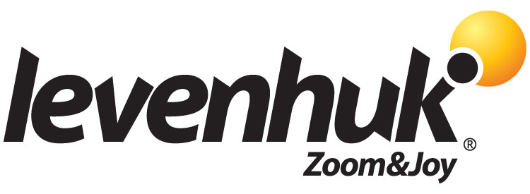

Логотип компании Левенгук
О компании Левенгук
Главным направлением деятельности российской инновационной компании «Левенгук» является производство оптических приборов. На сегодняшний день «Левенгук» производит:
- микроскопы,
- бинокли,
- телескопы,
- зрительные трубы,
- монокуляры,
- лупы,
- планетарии,
- метеостанции,
- приборы ночного видения,
- измерительные инструменты,
- микропрепараты для микроскопов,
- средства по уходу за оптикой
и другие аксессуары.
История компании
Группа «Левенгук» была основана в США в 2002 году. Основной целью организации компании было продвижение высококачественных оптических приборов на рынках России, СНГ и Восточной Европы.
В 2007 году главный офис был перенесен в Москву, что позволило компании находиться ближе к конечному потребителю своих товаров и упростить логистику. Этот шаг положил начало интенсивному развитию и новой главе в истории компании.
Примеры нашей продукции
Посмотреть весь ассортимент: Каталог продукции
Наши достижения
За 13 лет работы мы:
-
Запуск детской линейки оптики с персонажами «Фиксики» (2013)
Создание специальных телескопов и микроскопов Levenhuk Фиксики для детей от 5 лет.
Яркий дизайн и узнаваемые герои сделали обучение науке увлекательным, что способствовало популяризации оптики среди молодой аудитории.
-
Введение пожизненной гарантии на оптические приборы (2013)
Компания одной из первых в отрасли предложила пожизненную гарантию на свою продукцию.
Это подчеркнуло высочайшее качество и надежность техники Levenhuk, укрепив доверие потребителей.
-
Сотрудничество с Discovery Channel и запуск бренда MAGUS (2021–2023)
Подписание контракта с Discovery Channel на производство оптики (2021), включая телескопы, микроскопы и приборы ночного видения.
Создание премиального бренда микроскопов MAGUS (2023) с дизайном от Студии Артемия Лебедева, ориентированного на профессионалов.